Contenidos
- Descripcion General de la IA
- Tecnologias de IA
- Descripcion General de DeepSeek y su Influencia en el Desarrollo de la IA
- Aplicaciones de la IA
- Historia de las Aplicaciones de IA
- Casos de Aplicacion de IA
- Debates y Futuro de la IA
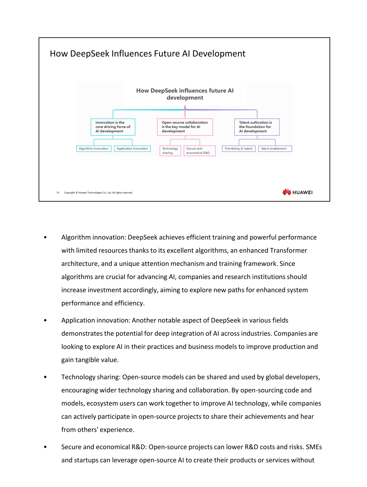
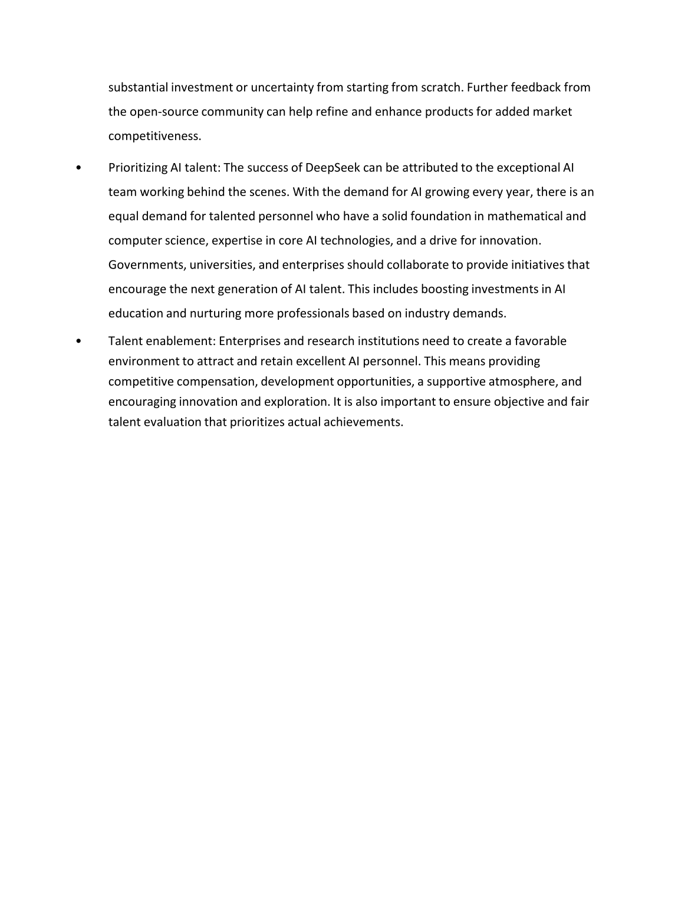
La evolucion de la IA se puede trazar a lo largo de varias etapas:
| Etapa | Periodo | Descripcion |
|---|---|---|
| Automatizacion | 1956 | Reglas humanas + ejecucion por maquinas. Sistemas expertos. |
| Percepcion y comprension | 1997-2015 | Big data + aprendizaje profundo. Sistemas de reconocimiento de patrones y recomendacion. Conocer el mundo. |
| Cognicion, generacion y creacion | 2020-2024 | Datos verticales + modelos base. Aplicaciones de IA generativa. Modelos base multimodales. Articulos exquisitos. |
| IA de proposito general | 5-10+ anos | Multi-modelo impulsado por modelos base / sistema de colaboracion multi-tarea. Modelo base AGI de proposito general. 100 billones de parametros vs. 100 billones de sinapsis en cerebros humanos. |
Hitos de la IA: 1956 (inicio de la IA) → 1997 → 2015 → 2020 → 2022 → 2024 → futuro.
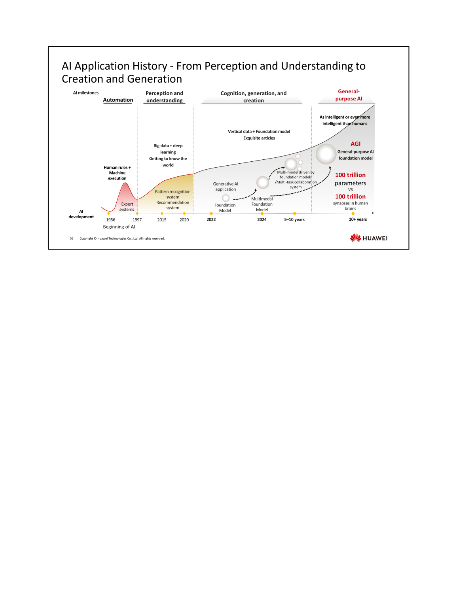
La arquitectura Transformer ha permitido la transicion de modelos de tarea unica a modelos multitarea:
| Aspecto | Aplicaciones de modelos DL tradicionales | Aplicaciones de LLM |
|---|---|---|
| Escenario de aplicacion | Tareas de optimizacion especificas; tipos de tareas unicas | Amplia cobertura de dominios; tareas diversas |
| Generalizacion | Debil adaptacion a nuevas muestras; inferencia de datos de un solo tipo | Fuertes capacidades en procesamiento de tareas entre dominios, transferencia de conocimiento y adaptacion a nuevas muestras |
| Capacidad del modelo | Capacidades de generacion deficientes; usados principalmente para tareas de discriminacion | Fuerte creatividad, zero-shot y few-shot, y razonamiento logico |
Escenarios simples → Escenarios complejos
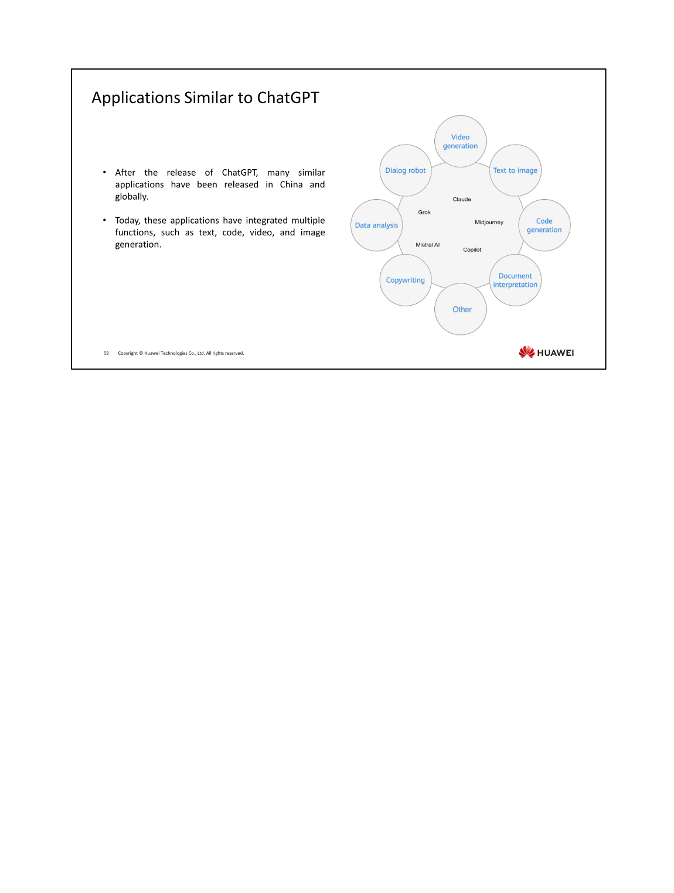
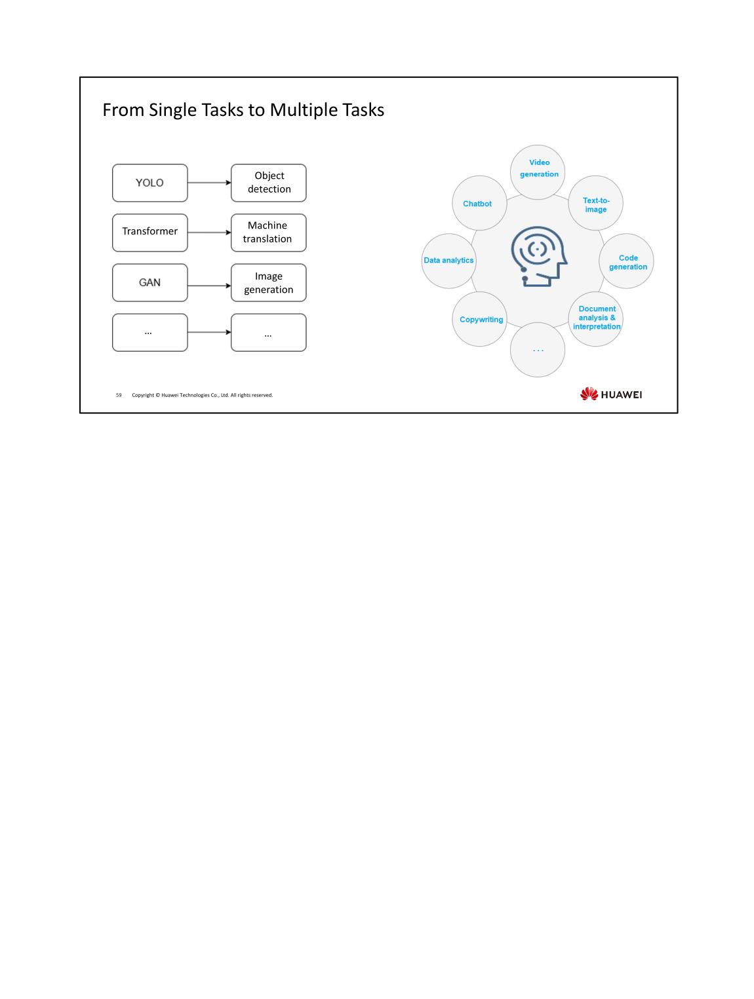
Escenario 1: Camara electromecanica — almacenamiento de equipos de distribucion electrica y comunicaciones.
Objetivo: Implementar inspeccion automatica sin atencion.
Solucion para el escenario 1: Robot de inspeccion automatica.
Escenario 2: Monitoreo subterraneo inteligente.
| Desafio | Descripcion |
|---|---|
| Cinta transportadora de carbon | Es inseguro y consume mucho tiempo inspeccionar una cinta transportadora de carbon de mas de 20 km. Multiples segmentos de cinta necesitan colaborar para prevenir acumulacion de carbon. |
| Violaciones de protocolo de comportamiento | No usar cascos de seguridad, fumar, pasar bajo equipos, caminar por pasillos y sentarse en cintas. |
| Violaciones operativas | Operaciones inadecuadas durante el drenaje de gas e inspeccion y drenaje de agua. |
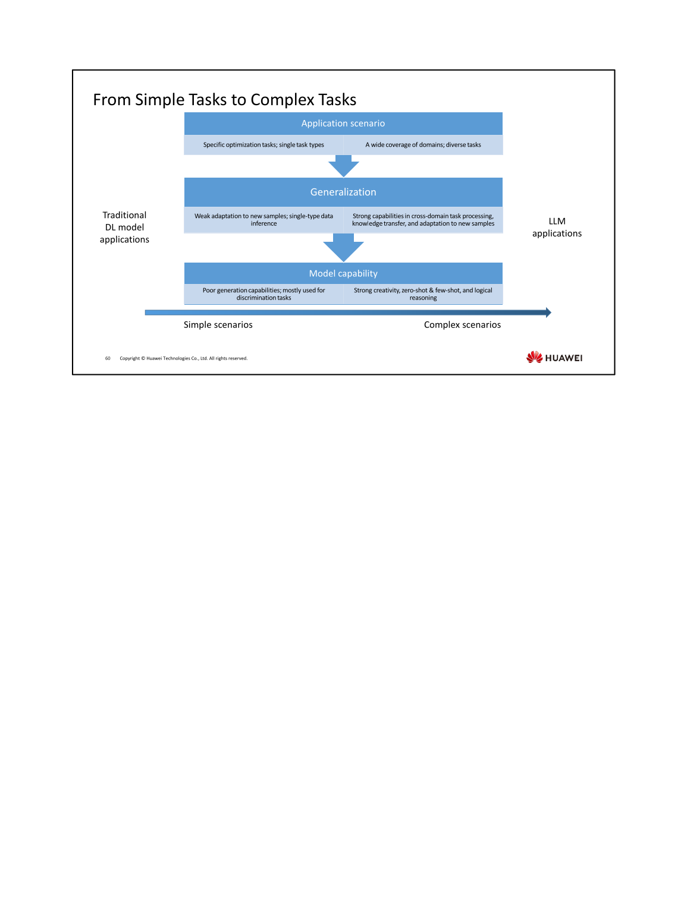
Fuente: Huawei Tech4All
Fuente: Huawei Tech4All - Grecia
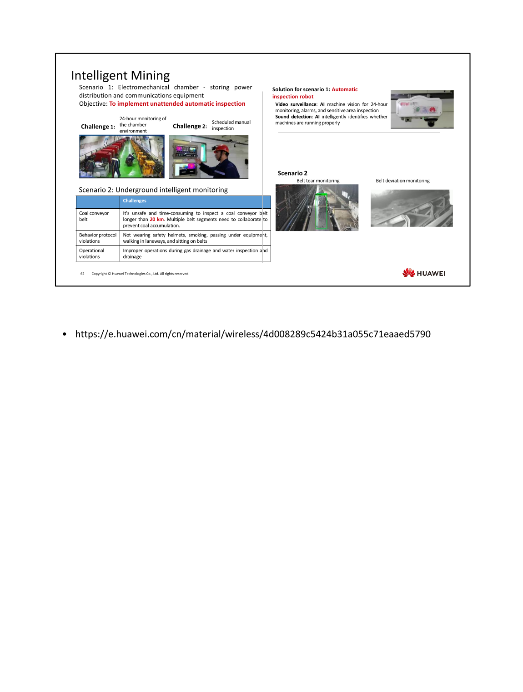
Datos multidisciplinarios y multiescala para entrenar cuatro modelos fundamentales de ciencia:
Todos convergen en un Modelo Universal AI4Science.
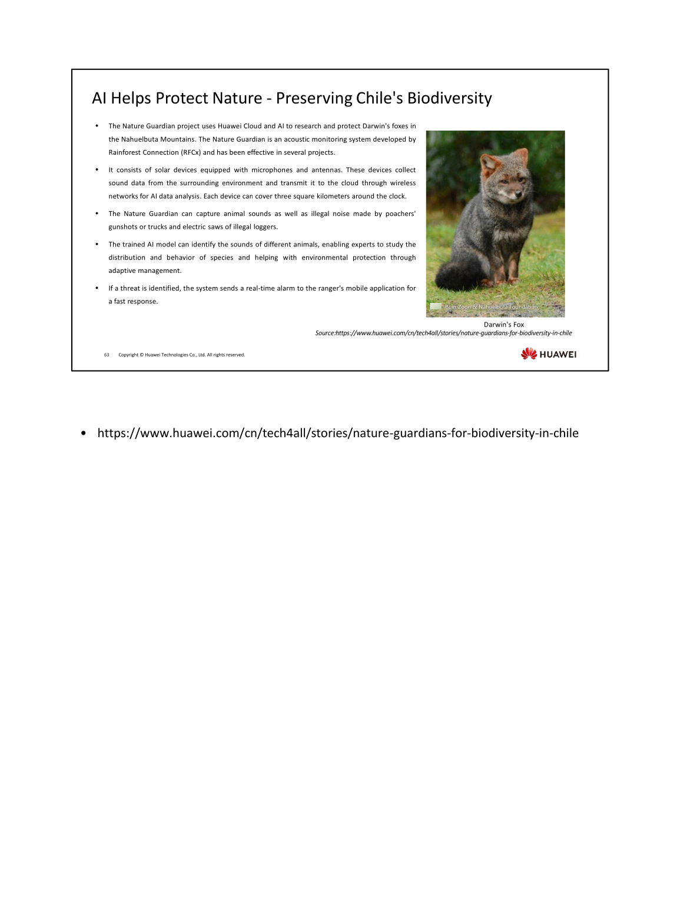
Industrias: Farmaceutica, Materiales, Quimica, Meteorologia, Manufactura aeroespacial, Informacion y comunicaciones, Salud, Biologia sintetica, Mejoramiento genetico.
Modelos universales:
Datos multidisciplinarios alimentan estos modelos universales que generan inteligencia emergente.
Modelos meteorologicos para pronosticos rapidos y precisos del tiempo.
| Metrica | Prediccion Numerica Tradicional (NWP) | Inferencia del Modelo Meteorologico |
|---|---|---|
| Recursos para pronostico de 10 dias | 3,000 servidores, 5 horas | 1 dispositivo, 10 segundos |
| Precision de pronostico | Base | +20% mas preciso |
| Velocidad de pronostico | Base | 10,000x mas rapido |
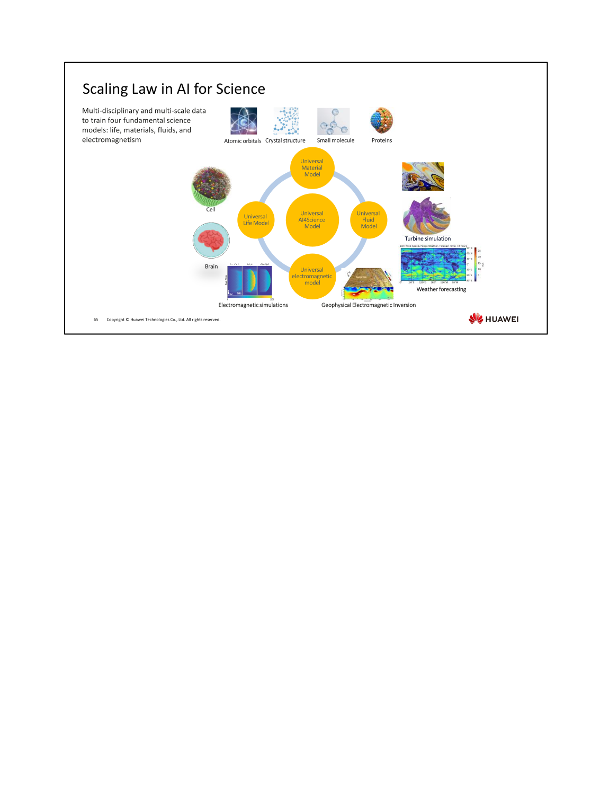
Modelos de moleculas farmaceuticas para una mayor eficiencia en el diseno de farmacos.
Puntos de dolor de la industria:
Modelo de moleculas farmaceuticas:
Capacidades:
El modelo produce 100 millones de compuestos estructuralmente novedosos.
Ciclo de descubrimiento de compuestos lider: De anos → 1 mes.
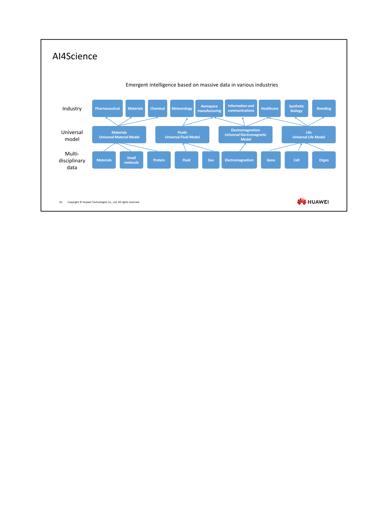
Cuatro pilares:
Capacidades: Analisis de eventos, generacion de informes, servicios inteligentes en linea, humano digital de servicios gubernamentales, linea directa gubernamental, redaccion de documentos, asistente de servicios gubernamentales, recomendacion de politicas.
Modelo Gubernamental:
Cinco habilidades principales para deteccion, reconocimiento, procesamiento y toma de decisiones inteligentes de proceso completo.
Modelos especificos por escenario: Preguntas y respuestas gubernamentales, redaccion gubernamental, deteccion de video de la ciudad, comprension multimodal basada en video, deteccion de objetos de vocabulario abierto.
La IA se aplica cada vez mas a la asistencia en programacion, generacion de codigo y depuracion automatizada.
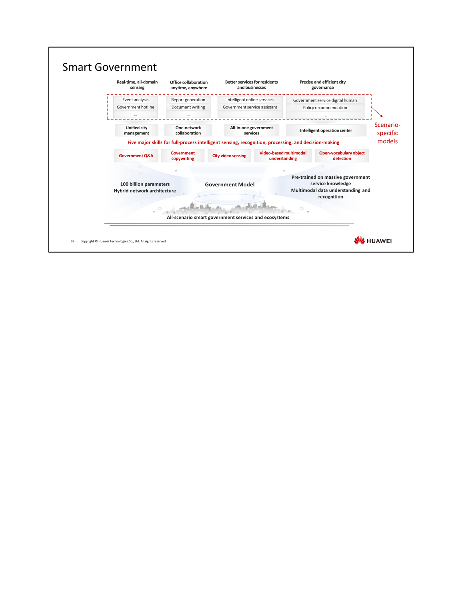
Existen muchos debates alrededor de las tecnologias de IA, especialmente a medida que evolucionan:
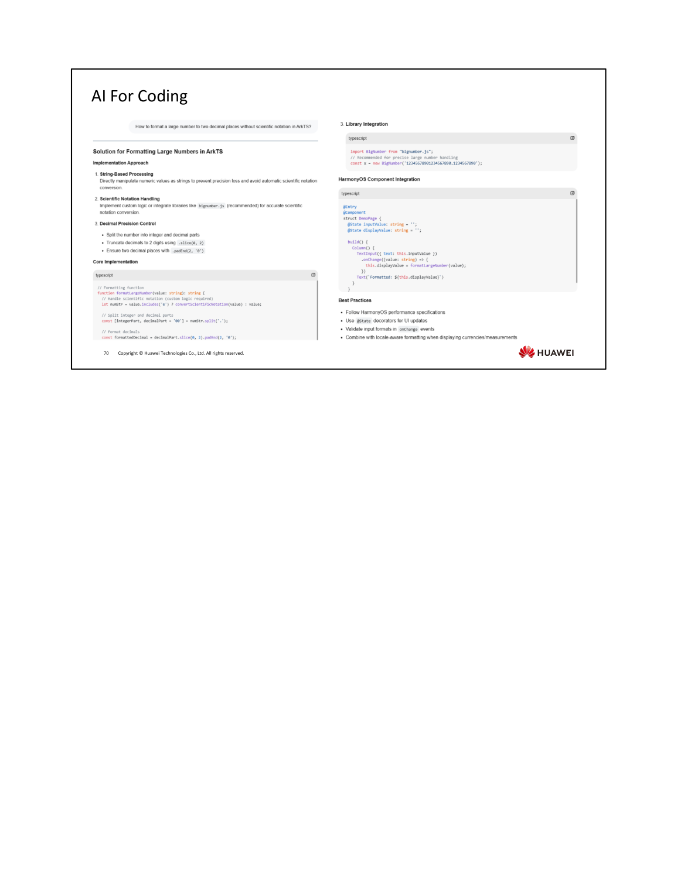
A medida que las tecnologias de IA se desarrollan, comenzamos a cuestionar la credibilidad de imagenes, audio y video. Ahora, tecnologias como modelos grandes multimodales y redes generativas adversarias (GAN) pueden usarse para producir imagenes y videos falsos, haciendo dificil distinguir entre lo verdadero y lo falso.
¿Verdadero? ¿Falso?
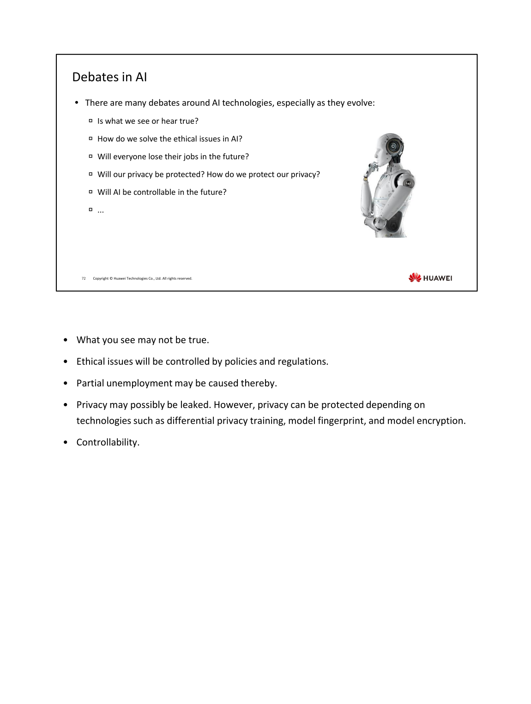
Como sociedad, siempre hemos buscado mayor eficiencia. La maquina de vapor redujo la necesidad de caballos. Cada paso hacia la automatizacion cambiara nuestra vida y trabajo. En la era de la IA, ¿que trabajos seran reemplazados por la IA?
La IA puede reemplazar:
¿Que oportunidades y empleos traera la IA?
El big data y la IA nos permiten obtener informacion de manera mas conveniente y eficiente. Sin embargo, nuestro comportamiento tambien se registra y los datos se usan todo el tiempo. ¿Como podemos proteger los datos privados?
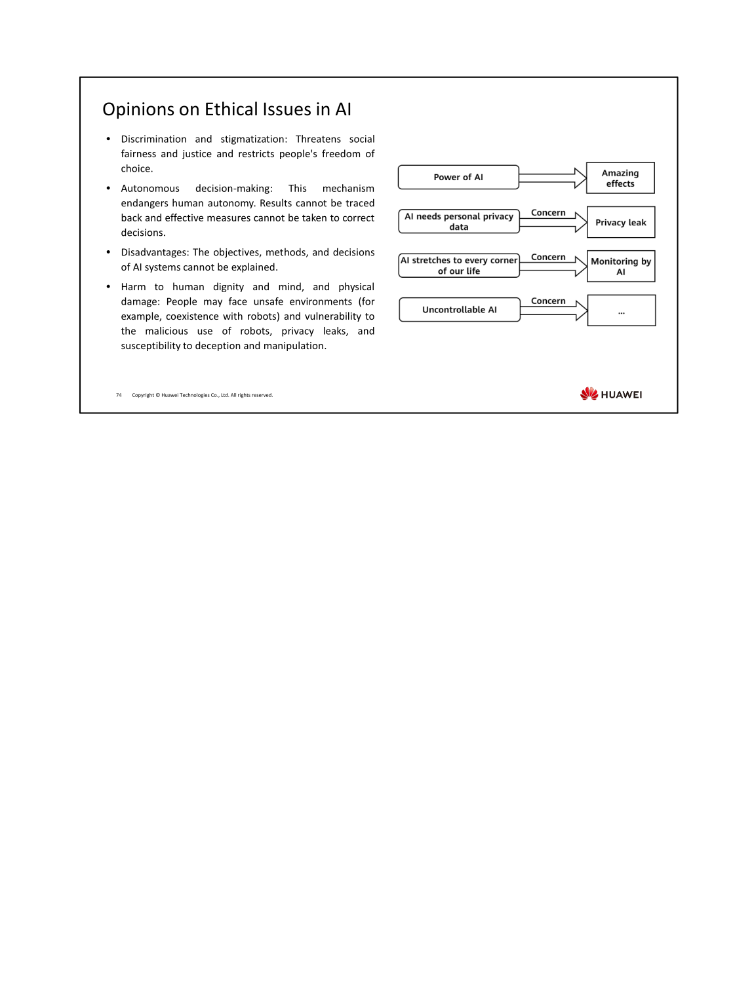
¿A quien pertenece? → Modelo
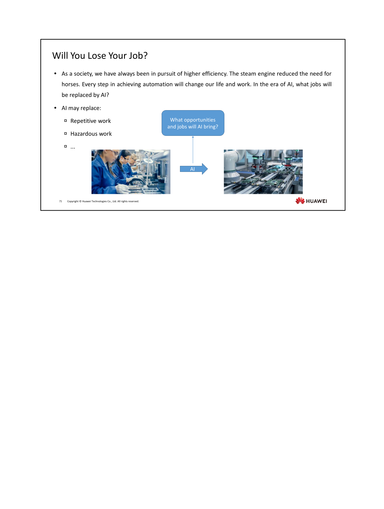
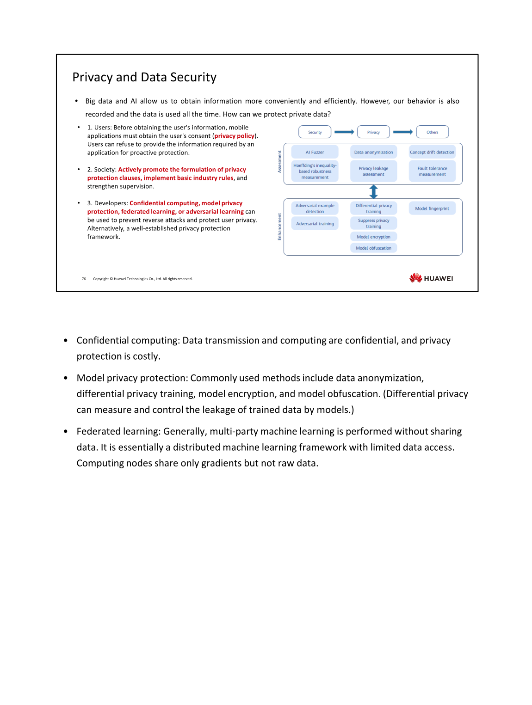
La IA vera una aplicacion mas amplia a medida que los campos verticales integren la tecnologia:
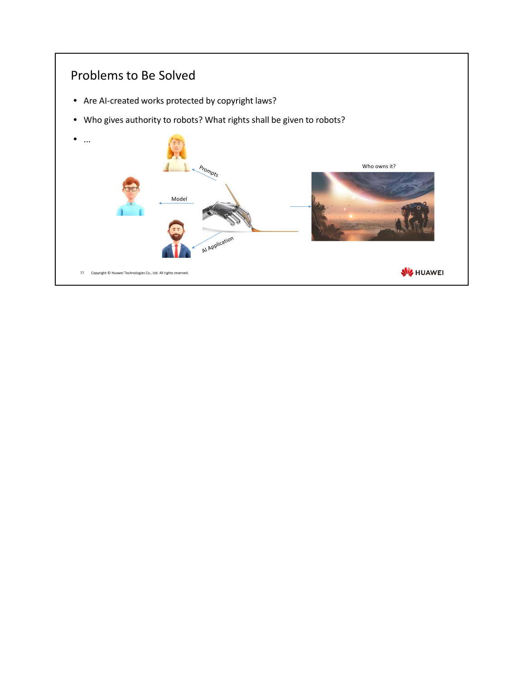
| Metrica | Dato |
|---|---|
| Escala del mercado | Se esperaba que el mercado global de IA alcanzara USD 638.2 mil millones en 2024 (USD 538.1 mil millones en 2023). |
| Inversion total en TI de IA | En 2022, la inversion global total en TI de IA fue de USD 128.8 mil millones, estimandose en USD 423.6 mil millones para 2027 (CAGR de ~26.9% a cinco anos). |
| Soluciones de modelos base | En el primer semestre de 2024, la escala de mercado de soluciones de modelos base de IA en China fue de CNY 1.38 mil millones. El CAGR estimado es del 56.2% de 2024 a 2028, alcanzando una escala de mercado de CNY 21.1 mil millones para 2028. |
De: un grupo de personas trabajan juntas → A: unas pocas personas controlan un grupo de maquinas.
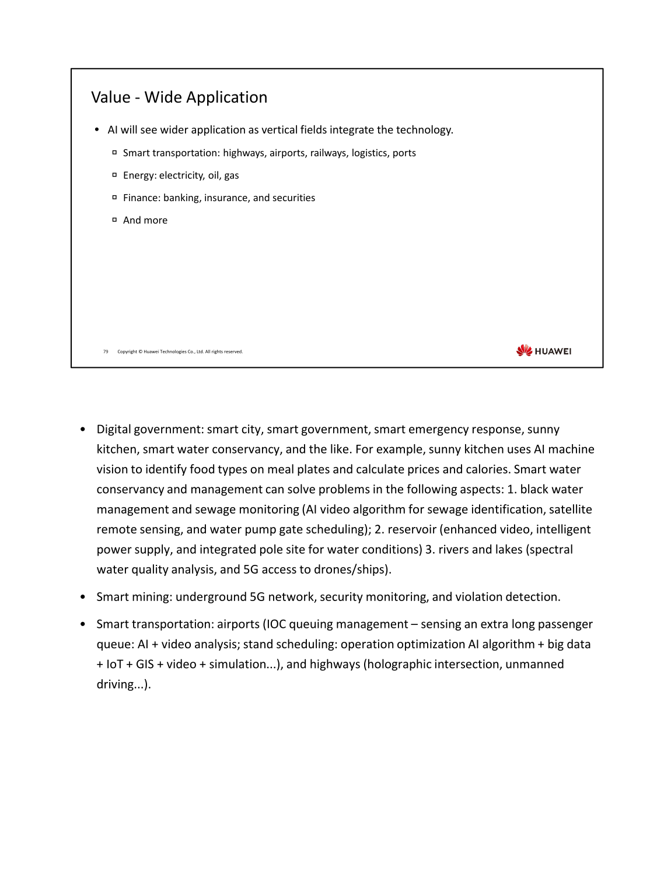
La AGI es un sistema informatico que puede implementar cualquier actividad humana inteligente. Se caracteriza por una inteligencia universal, incluyendo auto-aprendizaje, auto-mejora, auto-ajuste, y capacidades de aprendizaje, inferencia y toma de decisiones entre dominios y entre modalidades.
La inteligencia artificial encarnada es un sistema inteligente que implanta IA en objetos fisicos. Esto les da a los objetos capacidades como percepcion autonoma, aprendizaje, toma de decisiones y accion en entornos fisicos, para que puedan adaptarse de manera flexible a los entornos y tareas fisicas.
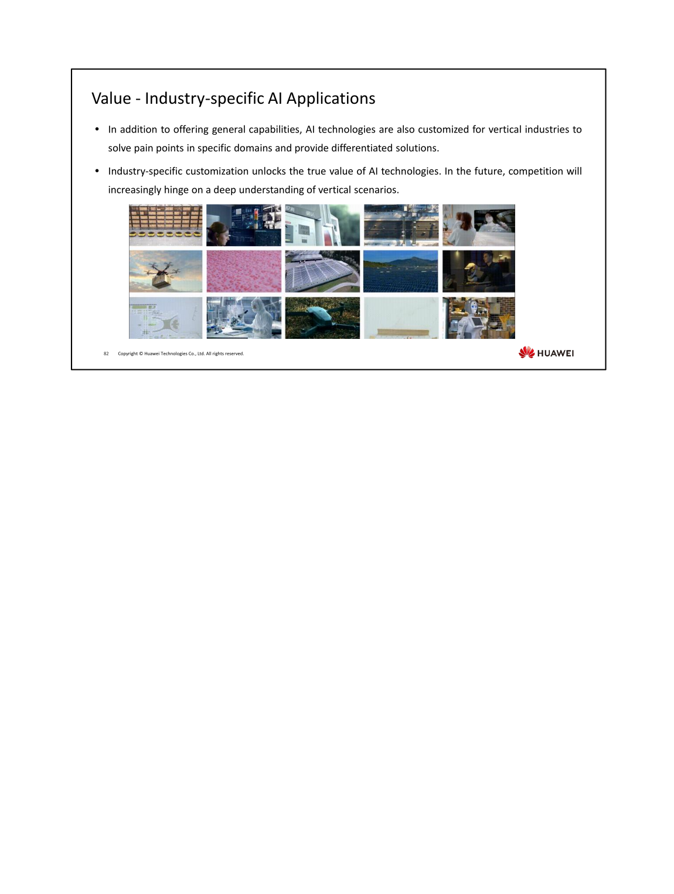
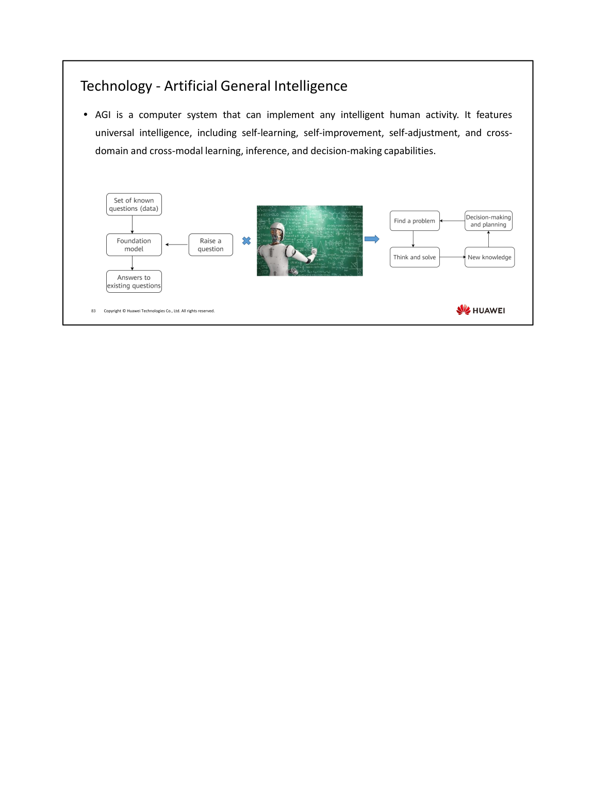
Se espera que el futuro de las aplicaciones de IA presente una integracion tecnologica mas amplia, una penetracion industrial mas profunda y consideraciones eticas y de seguridad continuas.
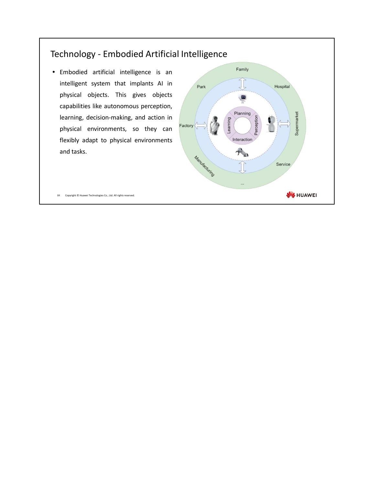
Este capitulo cubrio la definicion e historia de la IA, sus aplicaciones y sectores, y temas controversiales y tendencias futuras en el campo.
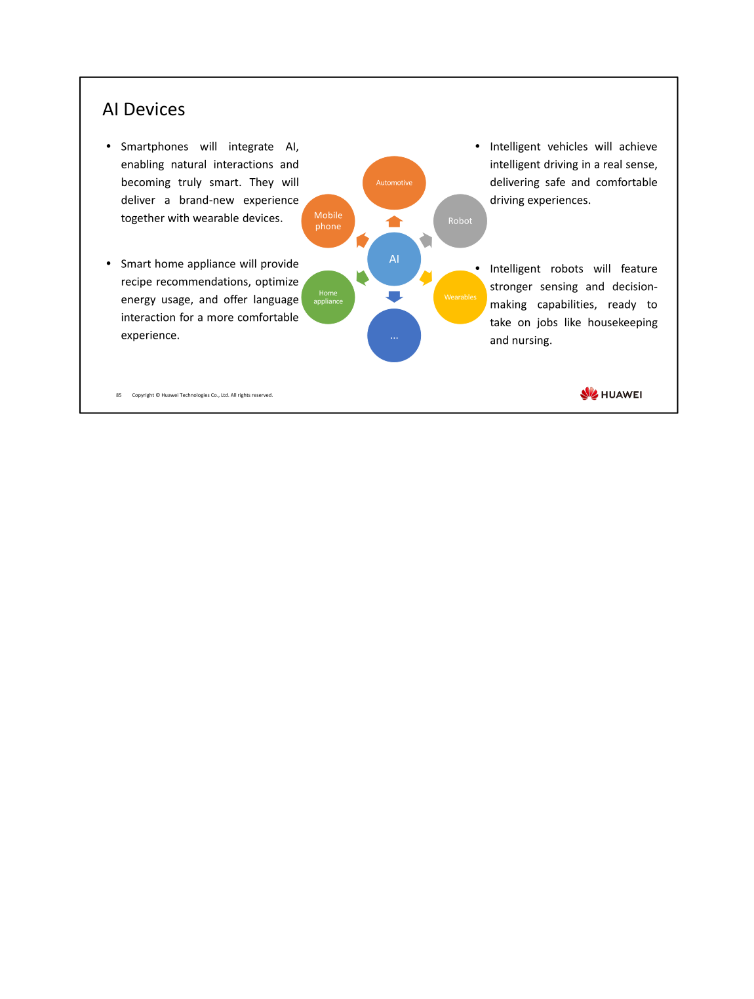
1. (Pregunta de seleccion multiple) ¿Cuales de las siguientes son aplicaciones de vision por computadora?
B, C, D
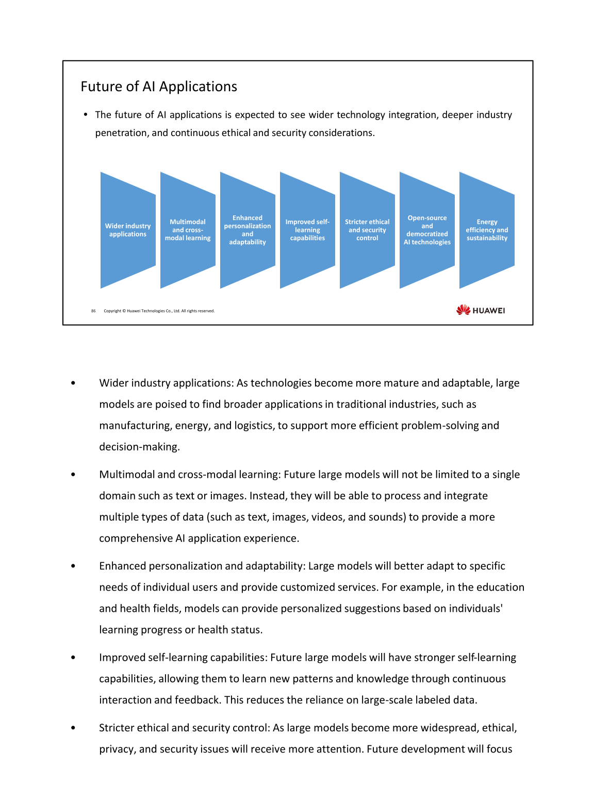
Llevar lo digital a cada persona, cada hogar y cada organizacion para un mundo completamente conectado e inteligente.
Copyright 2025 Huawei Technologies Co., Ltd. Todos los derechos reservados.
Modulo 2: Descripcion General del Aprendizaje Automatico
Machine Learning Overview
Al completar este curso, comprenderas:
El aprendizaje automatico se combina frecuentemente con metodos de aprendizaje profundo para estudiar y observar algoritmos de IA. Se dice que un programa de computadora aprende de la experiencia E con respecto a alguna clase de tareas T y medida de rendimiento P, si su rendimiento en las tareas en T, medido por P, mejora con la experiencia E.
Flujo del aprendizaje automatico:

| Metodo basado en reglas | Aprendizaje automatico |
|---|---|
| Se usa programacion explicita para resolver problemas. | Los modelos se entrenan con muestras. |
| Las reglas pueden determinarse manualmente. | Las reglas de decision son complejas o dificiles de describir. |
| Las maquinas aprenden las reglas automaticamente. |
El aprendizaje automatico proporciona soluciones a problemas complejos, o aquellos que involucran una gran cantidad de datos cuya funcion de distribucion no se puede determinar.
Considera los siguientes escenarios:
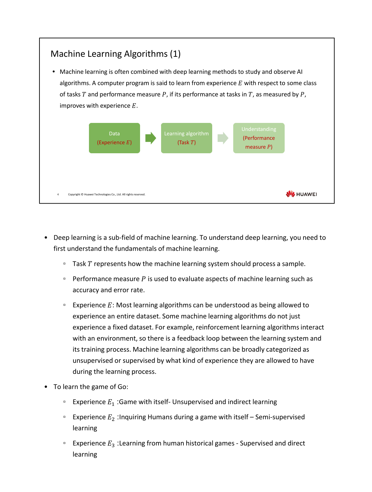
Diagrama que muestra la relacion entre la complejidad de las reglas y la escala del problema:
La funcion objetivo f es desconocida, y el algoritmo de aprendizaje no puede obtener una funcion f perfecta. La funcion hipotesis g aproxima la funcion f, pero puede diferir de ella.
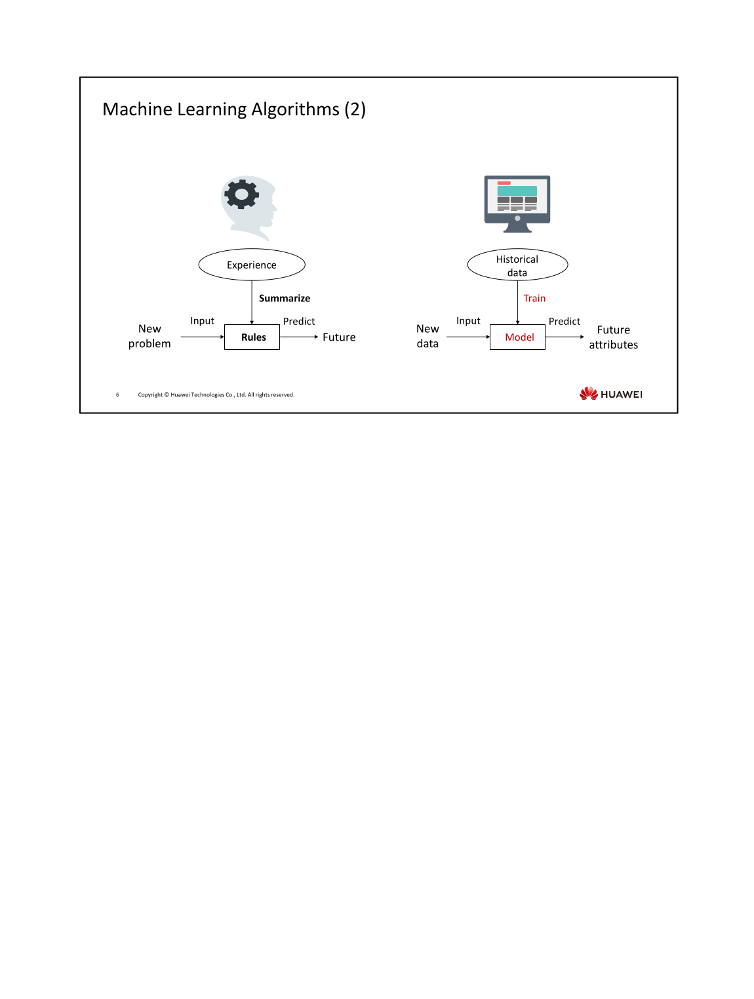
El aprendizaje automatico puede resolver muchos tipos de tareas. Los tres tipos mas comunes son:
La clasificacion y la regresion son dos tipos principales de tareas de prediccion. La salida de la clasificacion son valores de clase discretos, y la salida de la regresion son valores continuos.
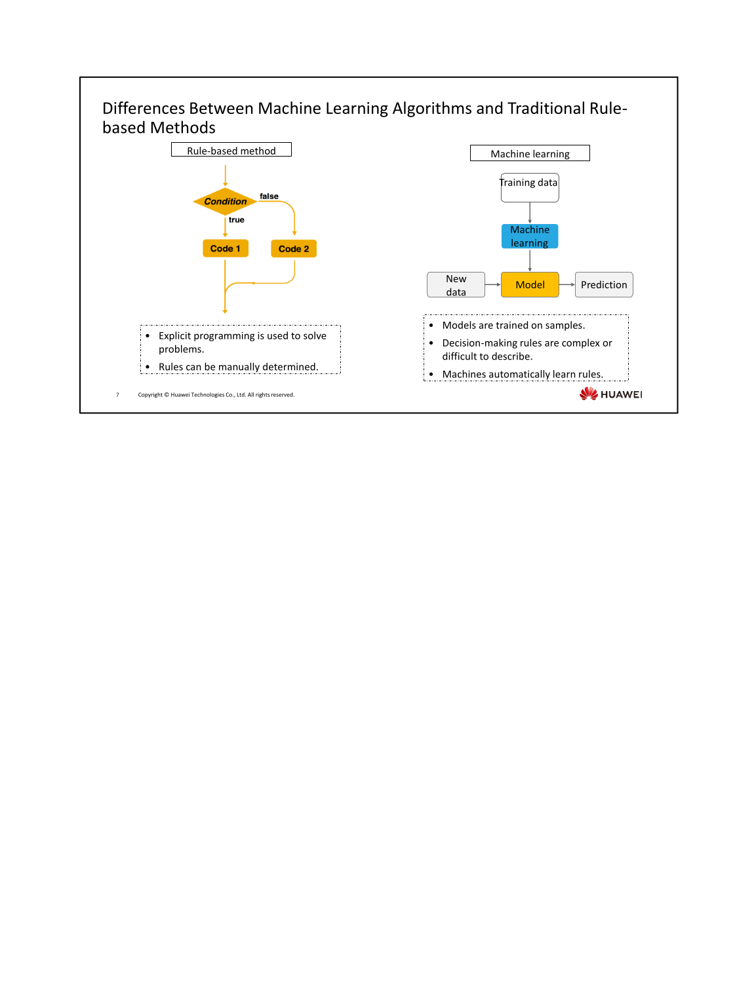
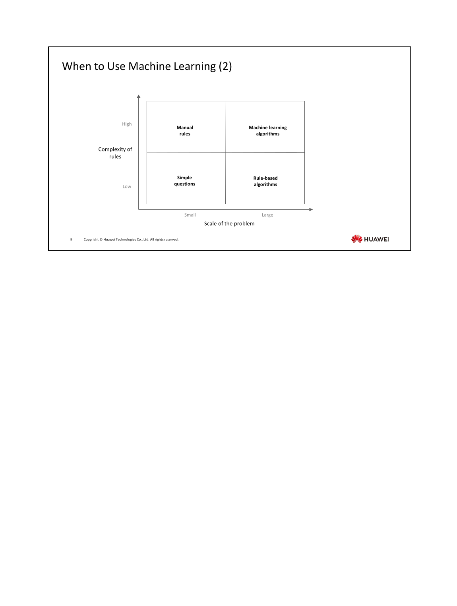
Ejemplo con datos de clima para determinar si es adecuado para hacer ejercicio:
| Caracteristica 1 (Clima) | Caracteristica 2 (Temperatura) | Caracteristica 3 (Velocidad del Viento) | Objetivo (Apto para Ejercicio) |
|---|---|---|---|
| Soleado | Alta | Alta | Si |
| Lluvioso | Baja | Media | No |
| Soleado | Baja | Baja | Si |
El algoritmo de aprendizaje supervisado usa caracteristicas de datos con etiquetas conocidas para entrenar el modelo.
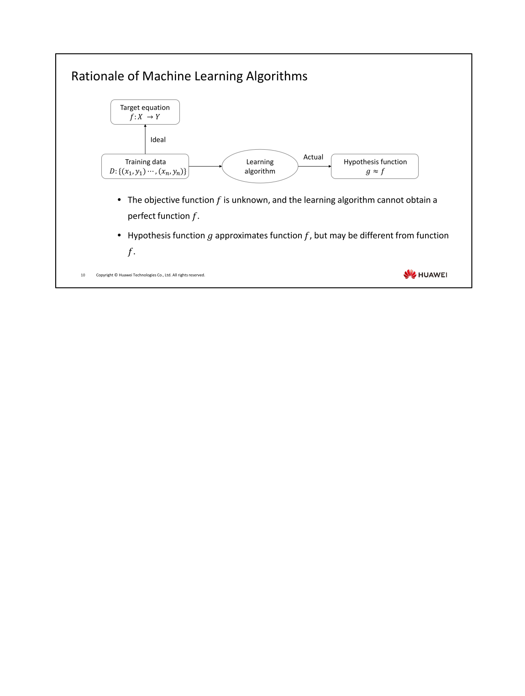
La regresion refleja las caracteristicas de los atributos de las muestras en un conjunto de datos. Se usa una funcion para expresar la relacion de mapeo de muestras y descubrir la dependencia entre atributos.
Ejemplos:
La clasificacion usa un modelo de clasificacion para mapear muestras en un conjunto de datos a una categoria dada.
Ejemplos:
El algoritmo de aprendizaje no supervisado trabaja con datos sin etiquetas para encontrar similitud intra-cluster.
Ejemplo con datos de productos:
| Producto | Volumen de Ventas Mensual | Duracion de Venta | Categoria Resultante |
|---|---|---|---|
| Raqueta de badminton | 1000-2000 | 6:00-12:00 | Cluster 1 |
| Basquetbol | 500-1000 | 18:00-24:00 | Cluster 2 |
| Consola de videojuegos | 1000-2000 | 00:00-6:00 | Cluster 1 |
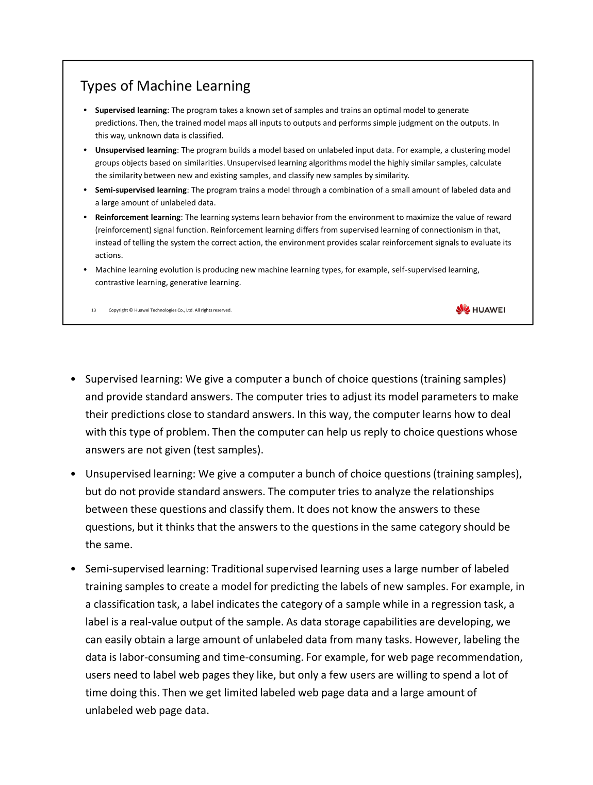
El agrupamiento usa un modelo de clustering para clasificar muestras en un conjunto de datos en varias categorias basandose en la similitud.
Ejemplos:
Ejemplo similar al aprendizaje supervisado pero con etiquetas parciales:
| Clima | Temperatura | Velocidad del Viento | Apto para Ejercicio |
|---|---|---|---|
| Soleado | Alta | Alta | Si |
| Lluvioso | Baja | Media | Desconocido |
| Soleado | Baja | Baja | Desconocido |
El algoritmo de aprendizaje semi-supervisado combina una pequena cantidad de datos etiquetados con una gran cantidad de datos no etiquetados.
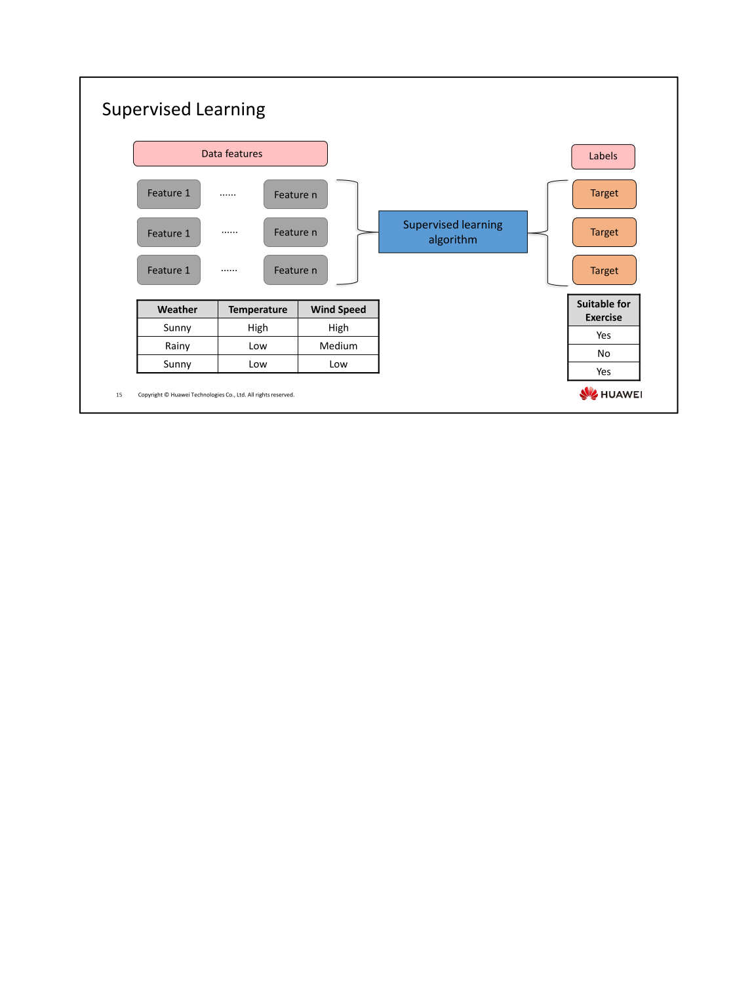
Un modelo de aprendizaje por refuerzo aprende del entorno, toma acciones y ajusta las acciones basandose en un sistema de recompensas.
Ciclo: Modelo → Accion a_t → Entorno → Estado s_(t+1) + Recompensa r_(t+1) → Modelo
El aprendizaje por refuerzo siempre intenta encontrar la mejor accion.
Ejemplos:
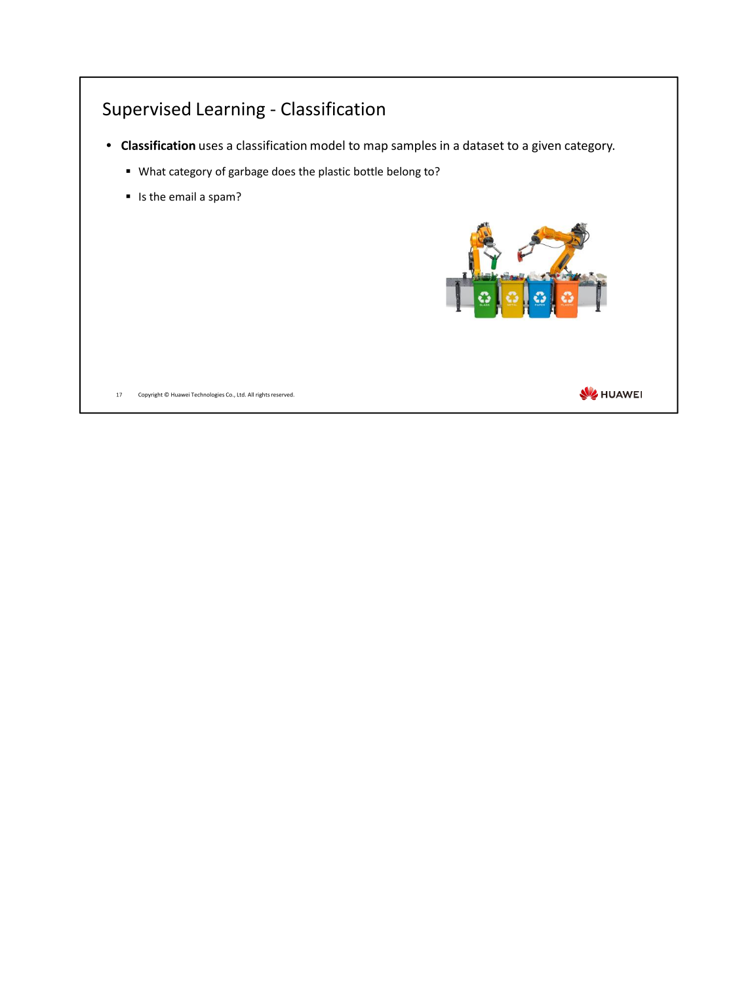
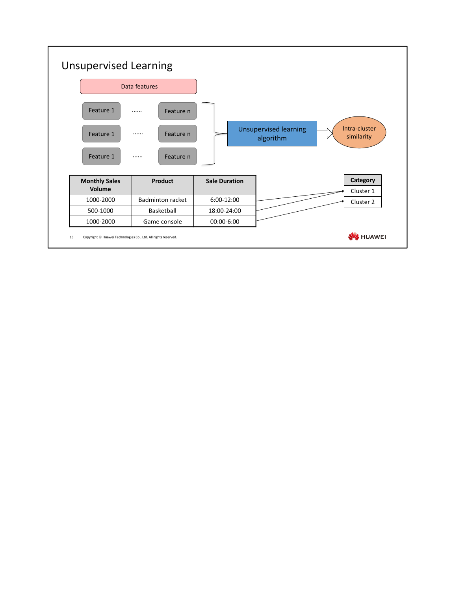
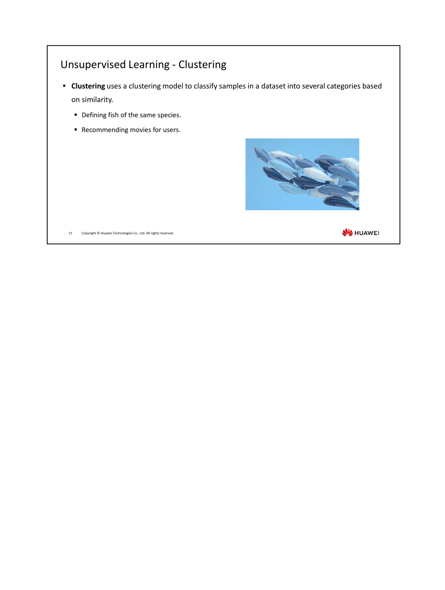
Conjunto de datos: Coleccion de datos usados en tareas de aprendizaje automatico, donde cada pieza de datos se llama una muestra. Los elementos o atributos que reflejan la presentacion o naturaleza de una muestra en un aspecto particular se llaman caracteristicas.
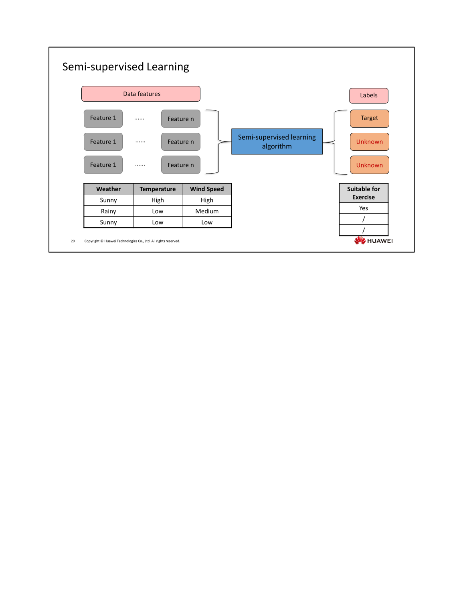
Composicion tipica de un conjunto de datos (ejemplo: precios de casas):
| No. | Area | Ubicacion | Orientacion | Precio de la Casa (etiqueta) |
|---|---|---|---|---|
| 1 | 100 | 8 | Sur | 1000 |
| 2 | 120 | 9 | Suroeste | 1300 |
| 3 | 60 | 6 | Norte | 700 |
| 4 (prueba) | 80 | 9 | Sureste | 1100 |
| 5 (prueba) | 95 | 3 | Sur | 850 |
Las filas 1-3 forman el conjunto de entrenamiento, las filas 4-5 forman el conjunto de prueba.
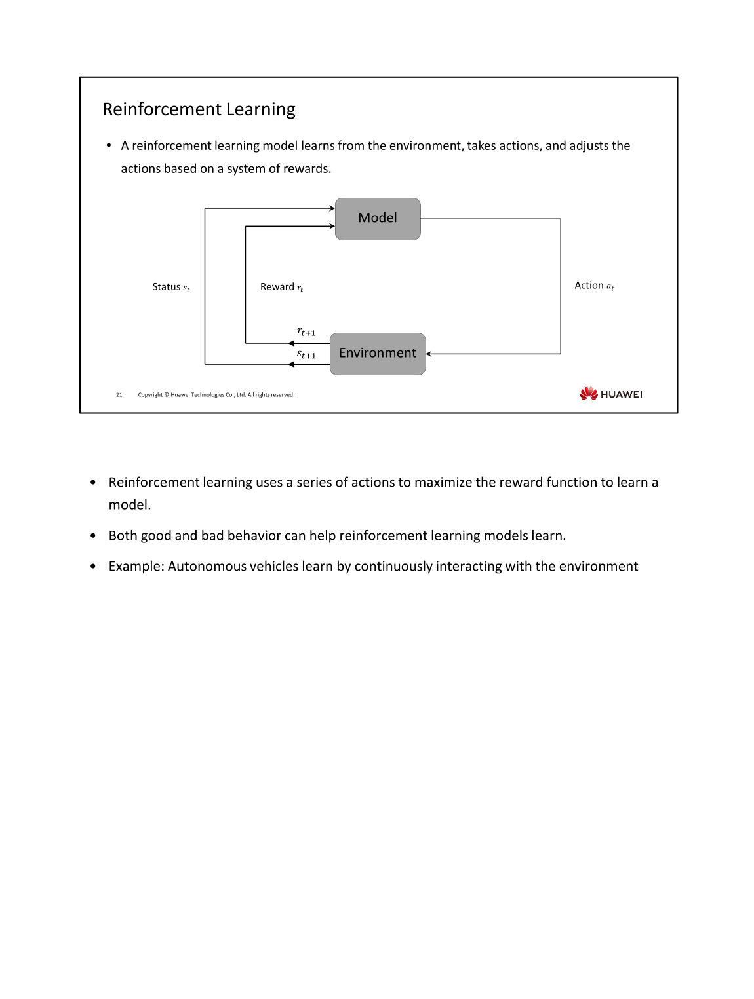
Los datos son cruciales para los modelos y determinan el alcance de las capacidades del modelo. Todos los buenos modelos requieren buenos datos.
Preprocesamiento de datos:
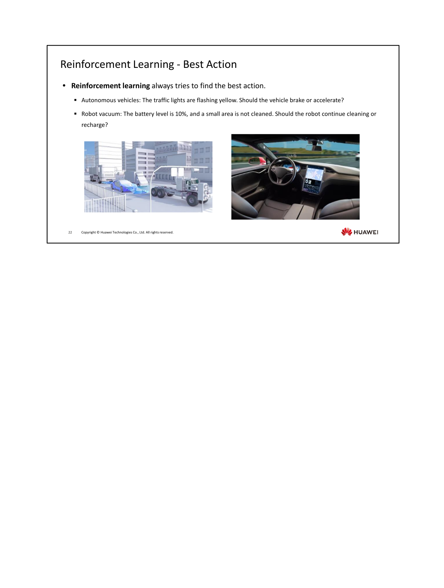
En que gastan su tiempo los cientificos de datos para el aprendizaje automatico:
Fuente: Informe de Ciencia de Datos de CrowdFlower 2016
La mayoria de los modelos de aprendizaje automatico procesan caracteristicas, que son generalmente representaciones numericas de variables de entrada que pueden usarse en el modelo.
En la mayoria de los casos, solo los datos preprocesados pueden ser usados por los algoritmos. El preprocesamiento de datos involucra las siguientes operaciones:
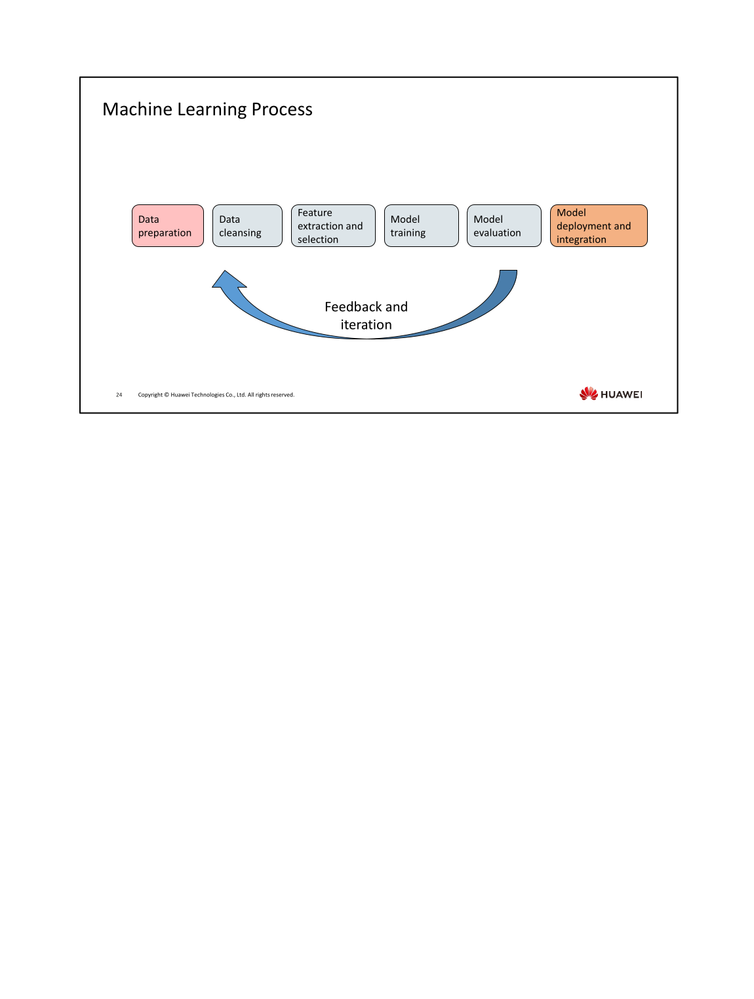
Los datos sin procesar generalmente contienen problemas de calidad de datos:
Tipos de problemas: Valores faltantes, valores invalidos, valores en campos incorrectos, elementos duplicados invalidos, formato incorrecto, atributos dependientes, errores ortograficos.
Los datos preprocesados necesitan convertirse a una representacion adecuada para modelos de aprendizaje automatico. Se usan tipicamente los siguientes metodos:
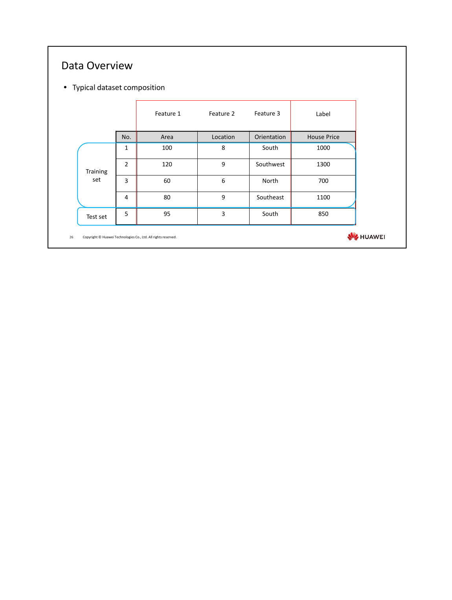
Generalmente, un conjunto de datos tiene muchas caracteristicas, algunas de las cuales pueden ser innecesarias o irrelevantes para los valores a predecir.
La seleccion de caracteristicas es necesaria en los siguientes aspectos:
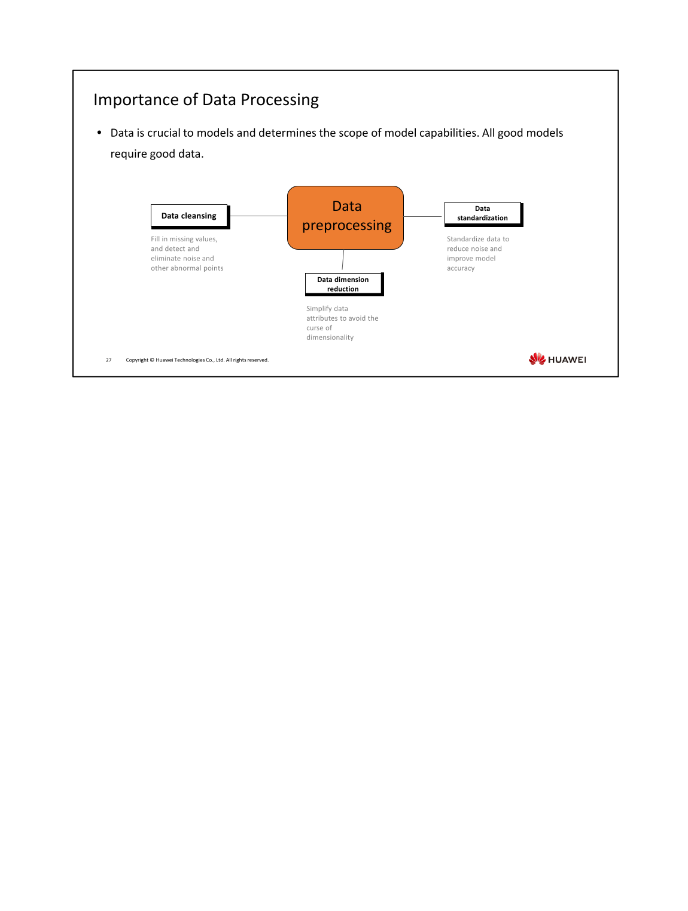
Los metodos de filtro son independientes de los modelos durante la seleccion de caracteristicas. Al evaluar la correlacion entre cada caracteristica y el atributo objetivo, un metodo de filtro puntua cada caracteristica usando una medida estadistica y luego ordena las caracteristicas por puntaje.
Metodos comunes:
Limitaciones: Los metodos de filtro tienden a seleccionar variables redundantes porque no consideran las relaciones entre caracteristicas.
Proceso: Recorrer todas las caracteristicas → Seleccionar el mejor subconjunto de caracteristicas → Algoritmo de aprendizaje → Evaluacion del modelo.
Los metodos envolventes usan un modelo de prediccion para puntuar un subconjunto de caracteristicas. Tratan la seleccion de caracteristicas como un problema de busqueda y evaluan y comparan diferentes combinaciones.
Metodo comun: Eliminacion recursiva de caracteristicas.
Limitaciones:
Proceso: Recorrer todas las caracteristicas → Generar subconjunto de caracteristicas → Algoritmo de aprendizaje → Evaluacion del modelo → Seleccionar el mejor subconjunto.
Los metodos embebidos tratan la seleccion de caracteristicas como parte del proceso de modelado.
La regularizacion es el tipo mas comun de metodos embebidos. Los metodos de regularizacion, tambien llamados metodos de penalizacion, introducen restricciones adicionales en la optimizacion de un algoritmo predictivo para sesgar el modelo hacia menor complejidad y reducir el numero de caracteristicas.
Metodo comun: Regresion LASSO.
Proceso: Recorrer todas las caracteristicas → Generar subconjunto de caracteristicas → Algoritmo de aprendizaje + Evaluacion del modelo → Seleccionar el subconjunto mas apropiado.
Se destaca el atributo de penalizacion del modelo, que se usa para eliminar caracteristicas insignificantes.
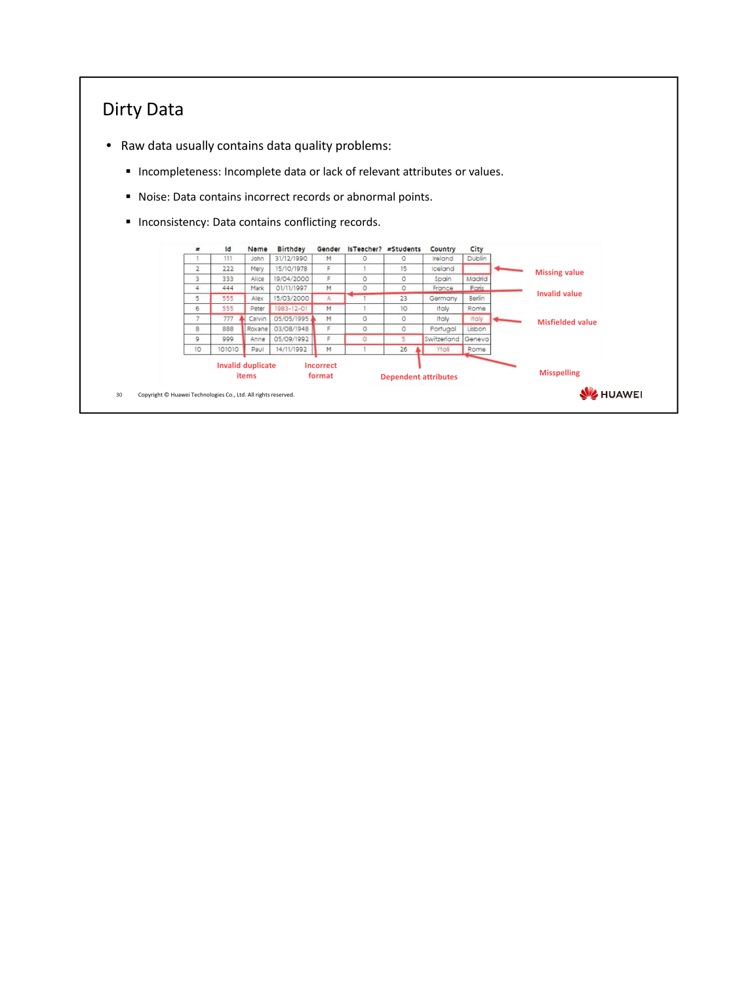
Despues de la limpieza de datos y la extraccion de caracteristicas, necesitamos comenzar a construir el modelo. El procedimiento general para construir un modelo se muestra arriba (aprendizaje supervisado).
Tarea: Usar un modelo de clasificacion para determinar si una persona es un jugador de basquetbol basandose en caracteristicas especificas.
| Nombre | Ciudad | Edad | Etiqueta |
|---|---|---|---|
| Mike | Miami | 42 | Si |
| Jerry | New York | 32 | No |
| Bryan | Orlando | 18 | No |
| Patricia | Miami | 45 | Si |
| Elodie | Phoenix | 35 | No |
| Remy | Chicago | 72 | Si |
| John | New York | 48 | Si |
Conjunto de entrenamiento: Datos usados por el modelo para determinar las relaciones entre caracteristicas y objetivos.
Conjunto de prueba: Nuevos datos para evaluar la efectividad del modelo.
Cada caracteristica o conjunto de caracteristicas proporciona una base de juicio para el modelo.
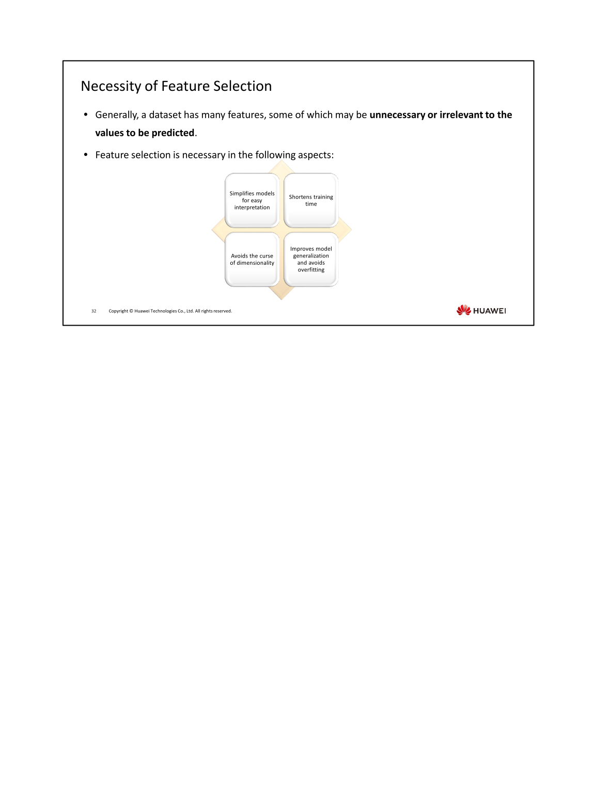
Ejemplo de modelo:
| Nombre | Ciudad | Edad | Prediccion |
|---|---|---|---|
| Marine | Miami | 45 | 0.3 |
| Julien | Miami | 52 | 0.9 |
| Fred | Orlando | 20 | 0.6 |
| Michelle | Boston | 34 | 0.5 |
| Nicolas | Phoenix | 90 | 0.4 |
El modelo aqui es similar al modelo de arbol de decision.
La capacidad de generalizacion es lo mas importante.
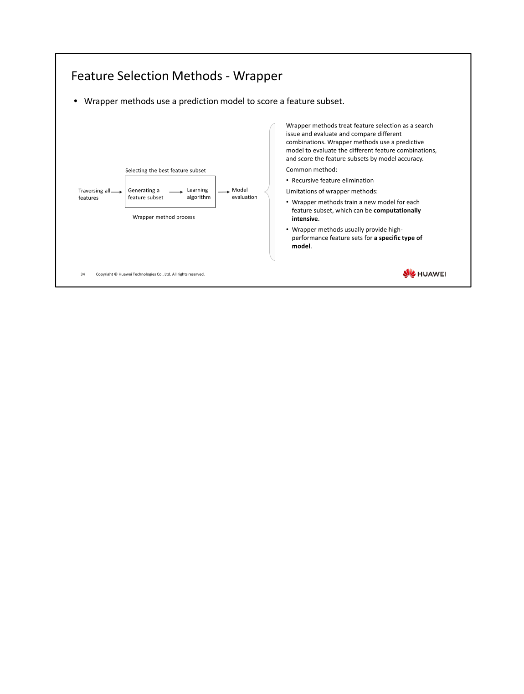
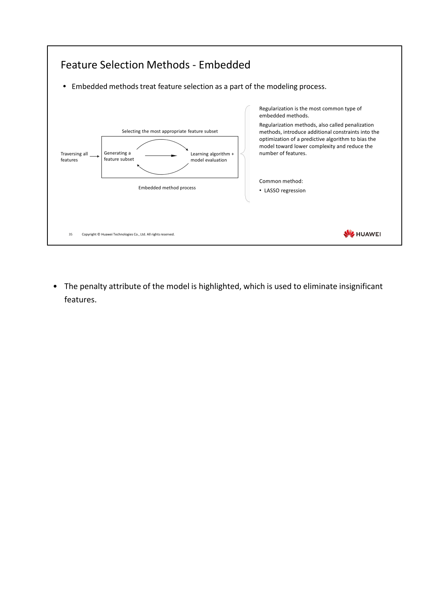
Capacidad del modelo, tambien conocida como complejidad del modelo, es la capacidad del modelo para ajustar diversas funciones.
Ilustracion: Subajuste (caracteristicas no aprendidas) → Buen ajuste → Sobreajuste (ruido aprendido)
La capacidad efectiva esta restringida por algoritmos, parametros y regularizacion.
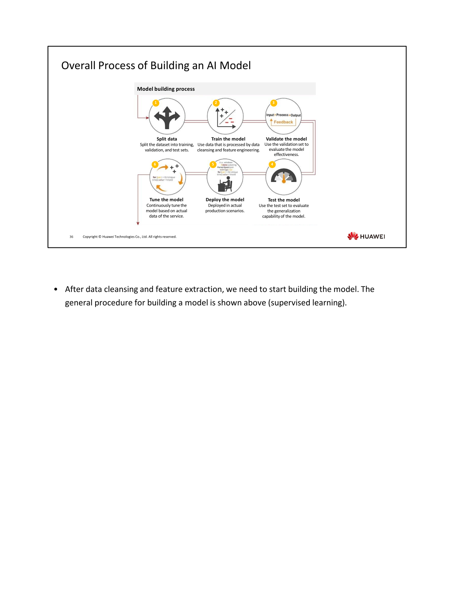
Error de prediccion = Sesgo^2 + Varianza + Error ineliminable
En general, los dos factores principales del error de prediccion son la varianza y el sesgo.
Sobre el error ineliminable: Teoricamente, si hubiera una cantidad infinita de datos y un modelo perfecto, el error podria eliminarse. En la practica, ningun modelo es perfecto y nuestro volumen de datos es limitado.
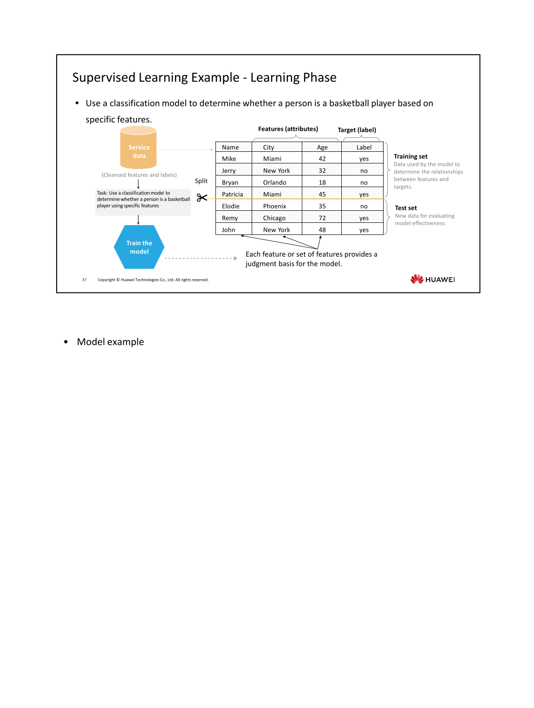
Diferentes combinaciones de varianza y sesgo:
Un modelo ideal puede capturar con precision las reglas en los datos de entrenamiento y generalizarse a datos invisibles (nuevos). Sin embargo, es imposible que un modelo complete ambas tareas al mismo tiempo.
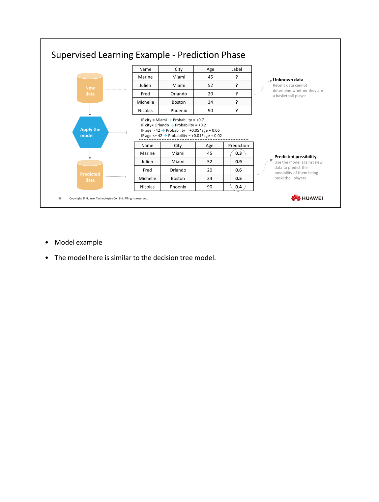
Grafica: Eje Y = Error, Eje X = Complejidad del modelo. El error de prueba forma una curva en U, mientras que el error de entrenamiento disminuye continuamente.
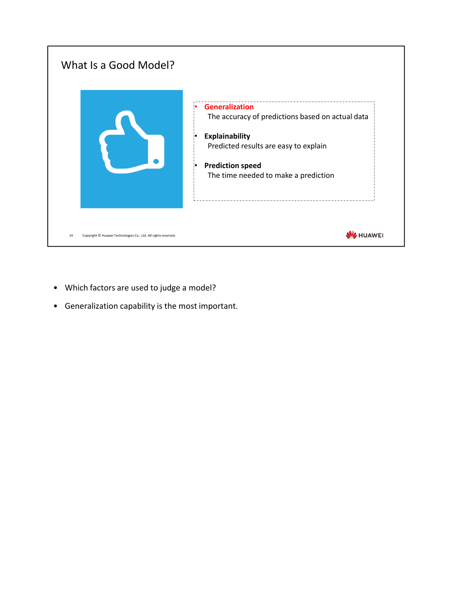
MAE = (1/m) * SUM(|yi - mi|)MSE = (1/m) * SUM((yi - mi)^2)R^2 = 1 - RSS/TSS = 1 - SUM((yi - mi)^2) / SUM((yi - y_media)^2)Fin de la Parte 2 — Diapositivas 55 a 133
Cubre: Seccion 4 (Aplicaciones de la IA), Seccion 5 (Debates y Futuro de la IA), e inicio del Modulo 2 (Descripcion General del Aprendizaje Automatico — algoritmos, tipos, proceso, conceptos de evaluacion).
La Parte 3 continuara con: Evaluacion de Clasificacion, Descenso de Gradiente, Hiperparametros, Validacion Cruzada y Algoritmos Comunes de ML.